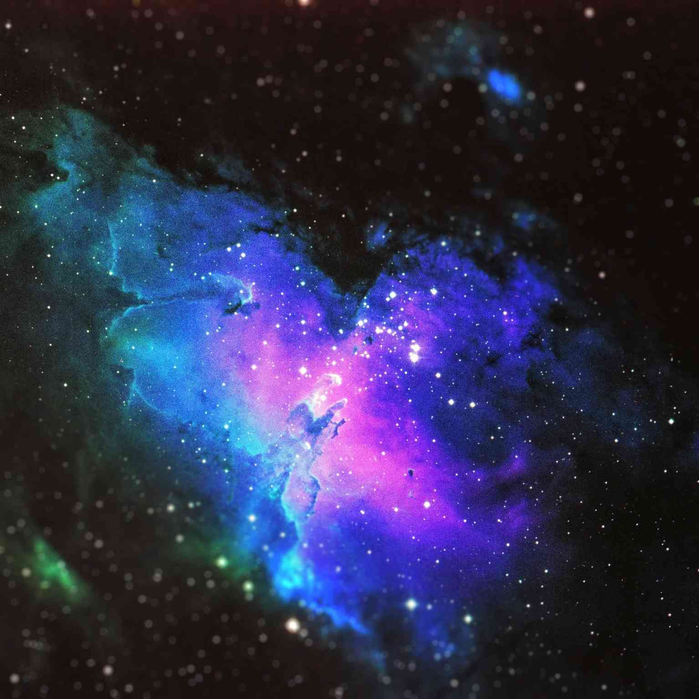

Come join us at the Community Science Museum where we're committed to making science accessible to all.
Over the course of human history, science has developed from our early understanding of fire, wind, water, and earth to exploring everything from galaxies far away to the very building blocks of life itself.
The aim of our museum is to create a space where everyone can experience the wonders of our discoveries and perhaps even ignite a lifelong passion to continue the exploration of the world around us.
exhibitions
space zone
Explore the wonders of our cosmos. Our fantastic exhibition, 'The Sky Above Us', explores the night sky and what we can see and know about the universe around us.
the sky above usevolution

Discover the origins of life on this planet and how the species we know today have evolved our time. You can also take some time to meet a few of the creatures who didn't survive, including our Woolly Mammoth, the Dodos, and a number of dinosaurs too.
back in timerobotics and ai

The information revolution is here and robotics and artificial intelligence are the science of the future. From useful home applications of AI to industrial uses of robotics, the future is here. You can even say hello and shake the hand of Rob the Robot.
to the futurespecial events
night at the museum
Get your family together for an exciting night in the museum as you sleep over beside dinosaurs and science displays. Bring your own sleeping bag and get ready to rough it as we go exploring the wonders of science.
visiting professor of aeronautics
It is our pleasure to announce that Prof Sheila Widnall from the Massachusetts Institute of Technology will be delivering 3 lectures on the development of aeronautics and where the future lies in this exciting 'space'.
energetica exhibition
On loan from the NEMO Science Museum in Amsterdam, the Energetica exhibition is coming to the Community Science Museum. It's a series of installations that allow visitors to experience the power of the elements as we harness them. From solar energy powering lighting, to 'Wind Island' that shows how turbines are able to use and control wind to create power.
for kids

holiday clubs
During the school holidays we run special holiday clubs where you can join other children your age to go on a journey of discovery. Each holiday we pick a new theme to explore. To find out more about the holiday club and how you can join, send us a message.
young stars club
We also have the Young Stars club which meets once a week on a Saturday between 10:00 and 13:00 where you'll get to explore and experiment with our team of experts.